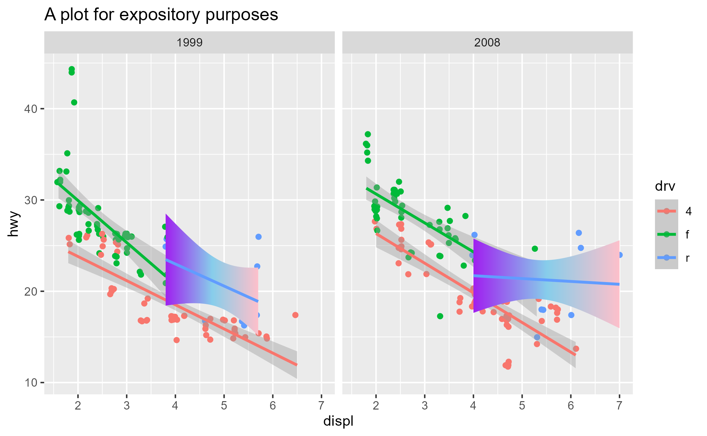
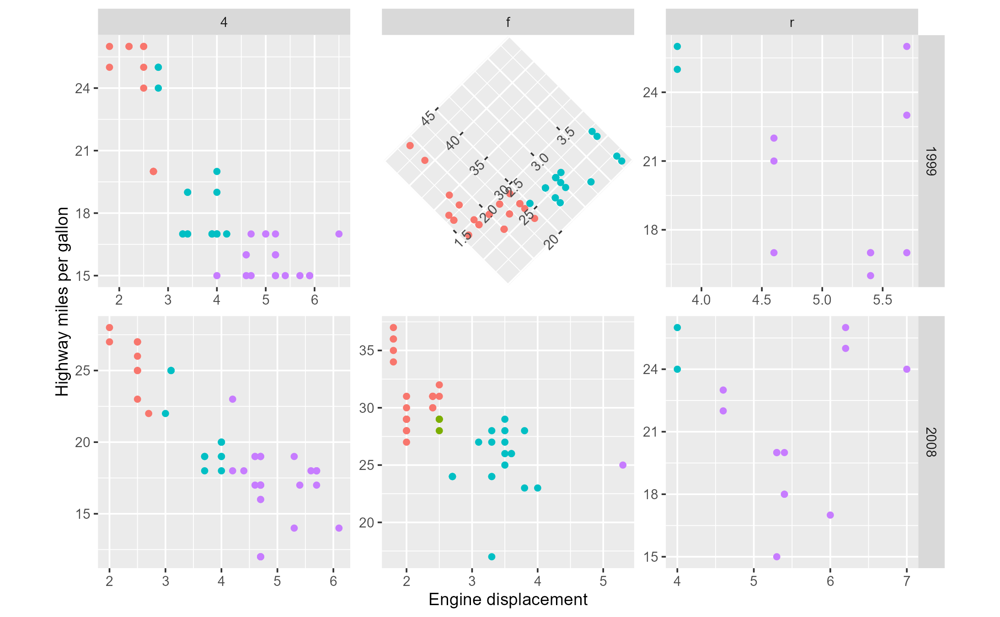
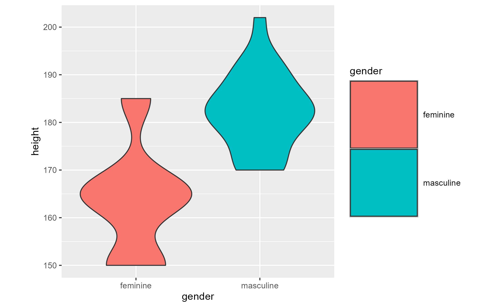
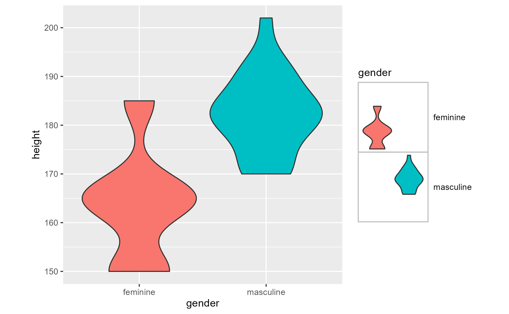

Extending base::trace() with
ggtrace()
The low-level function ggtrace() is designed for
interacting with functions and ggproto methods in the
ggplot2 ecosystem, from the “outside”.
Formally put, ggtrace() allows the user to inject
arbitrary expressions (called traces) to functions and
methods that are evaluated over the execution of a ggplot. When
“triggered” by the evaluation of the ggplot, these traces may modify the
resulting graphical output, or they may simply log their values to the
“tracedump” for further inspection by the user. Check out the FAQ
vignette for more details.
Briefly, there are three key arguments to ggtrace():
-
method: what function/method to trace -
trace_steps: where in the body to inject expressions -
trace_exprswhat expressions to inject
A simple example:
dummy_fn <- function(x = 1, y = 2) {
z <- x + y
return(z)
}
dummy_fn()## [1] 3The following code injects the code z <- z * 10 right
as dummy_fn enters the third “step” in the body, right
before the line return(z) is ran.
body(dummy_fn)[[3]]## return(z)
ggtrace(
method = dummy_fn,
trace_steps = 3L, # Before `return(z)` is ran
trace_exprs = quote(z <- z * 10)
)## `dummy_fn` now being traced.Note that the value of trace_exprs must be of type
“language” (a quoted expression), the idea being that we are
injecting code to be evaluate inside the function when it is
called. Often, providing the code wrapped in quote()
suffices. For more complex injections see the Expressions chapter of
Advanced R
After this ggtrace() call, the next time
dummy_fn is called it is run with this injected code.
# Returns 30 instead of 3
dummy_fn()## Triggering trace on `dummy_fn`## Untracing `dummy_fn` on exit.## [1] 30Essentially, dummy_fn ran with this following modified
code just now:
dummy_fn_traced <- function(x = 1, y = 2) {
z <- x + y
z <- z * 10 #< injected code!
return(z)
}
dummy_fn_traced()## [1] 30By default, traces created by ggtrace functions delete
themselves after being triggered. You can also check whether a function
is currently being traced with is_traced().
is_traced(dummy_fn)## [1] FALSEggtrace automatically logs the output of triggered
trace to what we call tracedumps. For example,
last_ggtrace() stores the output of the last trace
created by ggtrace():
# The value of `(z <- z * 10)` when it was ran
last_ggtrace() # Note that this is a list of length `trace_steps`## [[1]]
## [1] 30See the references section Extending
base::trace() for more functionalities offered by
ggtrace().
Workflows for interacting with ggplot internals
Admittedly, ggtrace() is a bit too clunky for
interactive explorations of ggplot internals. To address this, we offer
“workflow” functions in the form of
ggtrace_{action}_{value}(). These are grouped into three
workflows: Inspect, Capture, and Highjack.
NOTE: Making the most out of these workflow functions requires a hint of knowledge about ggplot internals, namely the fact that ggproto objects like Stat and Geom exists, and that these ggprotos have methods that step in at different parts of the ggplot build/render pipeline to modify the data. If you are completely new to these concepts, you should at least watch Thomas Lin Pedersen’s talk on Extending your ability to extend ggplot2 before proceeding.
Walkthrough with geom_smooth()
Say we want to learn more about how geom_smooth() layer
works, exactly
## geom_smooth: na.rm = FALSE, orientation = NA, se = TRUE
## stat_smooth: na.rm = FALSE, orientation = NA, se = TRUE
## position_identityTo do this, we’re going to adopt the example from the ggplot2 internals chapter of the ggplot book
p <- ggplot(mpg, aes(displ, hwy, color = drv)) +
geom_point(position = position_jitter(seed = 1116)) +
geom_smooth(method = "lm", formula = y ~ x) +
facet_wrap(vars(year)) +
ggtitle("A plot for expository purposes")
pLet’s focus on the Stat ggproto. We see that
geom_smooth() uses the StatSmooth ggproto
class( geom_smooth()$stat )## [1] "StatSmooth" "Stat" "ggproto" "gg"
identical(StatSmooth, geom_smooth()$stat)## [1] TRUEThe bulk of the work by a Stat is done in the compute_*
family of methods, which are essentially just functions. We’ll focus on
compute_group here:
# ggproto methods wrap over the actual function and print extra info
class( StatSmooth$compute_group )## [1] "ggproto_method"
# Use `get_method` to pull out just the function component
class( get_method(StatSmooth$compute_group) )## [1] "function"
# StatSmooth inherits `compute_layer`/`compute_panel` and defines `compute_group`
get_method_inheritance(StatSmooth)## $Stat
## [1] "aesthetics" "compute_layer" "compute_panel" "default_aes"
## [5] "finish_layer" "non_missing_aes" "optional_aes" "parameters"
## [9] "retransform" "setup_data"
##
## $StatSmooth
## [1] "compute_group" "dropped_aes" "extra_params" "required_aes"
## [5] "setup_params"Inspect
Here we introduce our first workflow function
ggtrace_inspect_n(), which takes a ggplot as the first
argument and a ggproto method as the second argument, returning the
number of times the ggproto method has been called in the ggplot’s
evaluation:
ggtrace_inspect_n(x = p, method = StatSmooth$compute_group)## [1] 6As we might have guessed, StatSmooth$compute_group is
called for each fitted line (each group) in the plot. But if
StatSmooth$compute_group is essentially a function, what
does it return?
We can answer that with another workflow function
ggtrace_inspect_return(), which shares a similar
syntax:
return_val <- ggtrace_inspect_return(x = p, method = StatSmooth$compute_group)
dim(return_val)## [1] 80 6
head(return_val)## x y ymin ymax se flipped_aes
## 1 1.800000 24.33592 23.07845 25.59339 0.6250675 FALSE
## 2 1.859494 24.17860 22.94830 25.40890 0.6115600 FALSE
## 3 1.918987 24.02127 22.81795 25.22460 0.5981528 FALSE
## 4 1.978481 23.86395 22.68738 25.04052 0.5848527 FALSE
## 5 2.037975 23.70663 22.55658 24.85668 0.5716673 FALSE
## 6 2.097468 23.54931 22.42554 24.67307 0.5586045 FALSENote that ggtrace_inspect_return() only gave us 1
dataframe, corresponding to the return value of
StatSmooth$compute_group the first time it was
called. This comes from the default value of the third argument
cond being set to quote(._counter_ == 1).
Here, ._counter_ is an internal variable that keeps
track of how many times the method has been called. It’s available for
all workflow functions and you can read more in the Tracing
context section of the docs.
If we instead wanted to get the return value of
StatSmooth$compute_group for the third group of the second
panel, for example, we can do so in one of two ways:
-
Set the value of
condto an expression that evaluates to true for that panel and group:return_val_2_3_A <- ggtrace_inspect_return( x = p, method = StatSmooth$compute_group, cond = quote(data$PANEL[1] == 2 && data$group[1] == 3) ) -
Find the counter value when that condition is satisfied with
ggtrace_inspect_which(), and then simply check for the value of._counter_back inggtrace_inspect_return():ggtrace_inspect_which( x = p, method = StatSmooth$compute_group, cond = quote(data$PANEL[1] == 2 && data$group[1] == 3) )## [1] 6return_val_2_3_B <- ggtrace_inspect_return( x = p, method = StatSmooth$compute_group, cond = 6L # shorthand for `quote(._counter_ == 6L)` )
These two approaches work the same:
identical(return_val_2_3_A, return_val_2_3_B)## [1] TRUECapture
Okay, so we know what StatSmooth$compute_group returns,
but how does this return value change with different input? More
generally put, how does StatSmooth$compute_group behave
under different contexts?
We could answer this by making a bunch of different plots
using geom_smooth() and repeating the inspection workflow.
Alternatively, we can capture a call to
StatSmooth$compute_group and extract it as a function with
ggtrace_capture_fn():
captured_fn_2_3 <- ggtrace_capture_fn(
x = p,
method = StatSmooth$compute_group,
cond = quote(data$PANEL[1] == 2 && data$group[1] == 3)
)captured_fn_2_3 is essentially a snapshot of the
compute_group when it is called for the third group of the
second panel. Simply calling captured_fn_2_3 gives us the
expected return value:
identical(return_val_2_3_A, captured_fn_2_3())## [1] TRUEBut the true power of the “capture” workflow functions lies in the
ability to interact with what has been captured. In the case of
ggtrace_capture_fn(), the returned function has all of the
arguments passed to it at its execution stored in the formals.
In other words, it is “pre-filled” with its original values, which we
can inspect with formals():
## data scales method formula se
## "data.frame" "list" "function" "formula" "logical"
## n span fullrange xseq level
## "numeric" "numeric" "logical" "NULL" "numeric"
## method.args na.rm flipped_aes
## "list" "logical" "logical"This makes it very convenient for us to explore its behavior with different arguments passed to it.
For example, when flipped_aes = TRUE, we get
xmin and xmax columns replacing
ymin and ymax:
head( captured_fn_2_3(flipped_aes = TRUE) )## y x xmin xmax se flipped_aes
## 1 15.00000 5.450710 4.369619 6.531802 0.4961840 TRUE
## 2 15.13924 5.448163 4.385577 6.510749 0.4876904 TRUE
## 3 15.27848 5.445616 4.401438 6.489794 0.4792416 TRUE
## 4 15.41772 5.443068 4.417196 6.468941 0.4708400 TRUE
## 5 15.55696 5.440521 4.432846 6.448196 0.4624882 TRUE
## 6 15.69620 5.437974 4.448381 6.427566 0.4541888 TRUEIn this sense, we can effectively simulate what happens in
geom_smooth(orientation = "y") without needing to construct
an entirely different ggplot.
For another example, when we set the confidence interval to 10% with
level = 0.1, the ymin and ymax
values deviate less from the y value:
head( captured_fn_2_3(level = 0.1) )## x y ymin ymax se flipped_aes
## 1 4.000000 21.70513 21.46539 21.94487 1.867921 FALSE
## 2 4.037975 21.69321 21.45840 21.92801 1.829458 FALSE
## 3 4.075949 21.68128 21.45137 21.91119 1.791313 FALSE
## 4 4.113924 21.66936 21.44430 21.89442 1.753509 FALSE
## 5 4.151899 21.65743 21.43718 21.87769 1.716067 FALSE
## 6 4.189873 21.64551 21.43001 21.86101 1.679011 FALSELastly, let’s talk about the data variable we’ve been
using inside the cond argument of some of these workflow
functions. What is data$group and data$PANEL?
How do you know what data looks like?
The answer is actually simple: it’s an argument passed to
StatSmooth$compute_group. We saw earlier that it’s stored
in formals(captured_fn_2_3), but to target it explicitly we
can also use ggtrace_inspect_args():
args_2_3 <- ggtrace_inspect_args(
x = p,
method = StatSmooth$compute_group,
cond = quote(data$PANEL[1] == 2 && data$group[1] == 3)
)
identical(names(args_2_3), names(formals(captured_fn_2_3)))## [1] TRUE
args_2_3$data## x y colour PANEL group
## 10 5.3 20 r 2 3
## 11 5.3 15 r 2 3
## 12 5.3 20 r 2 3
## 13 6.0 17 r 2 3
## 14 6.2 26 r 2 3
## 15 6.2 25 r 2 3
## 16 7.0 24 r 2 3
## 43 5.4 18 r 2 3
## 48 4.0 26 r 2 3
## 49 4.0 24 r 2 3
## 50 4.6 23 r 2 3
## 51 4.6 22 r 2 3
## 52 5.4 20 r 2 3
## 73 5.4 18 r 2 3We see that PANEL and group columns
conveniently give us information about the panel and group that
compute_group is doing calculations over.
Highjack
Once we have some understanding of how
StatSmooth$compute_group works, we may want to test some
hypotheses about what would happen to the resulting graphical output if
the method returned something else.
Let’s revisit our examples from the Capture workflow. What if the
third group of the second panel calculated a more conservative
confidence interval (level = 0.1)? What is this effect on
the graphical output?
To answer this question, we use
ggtrace_highjack_return() to have a method return an
entirely different value.
First we store the modified return value in some variable:
modified_return_smooth <- captured_fn_2_3(level = 0.1)Then we target the same group inside cond and pass
modified_return_smooth to the value
argument:
ggtrace_highjack_return(
x = p,
method = StatSmooth$compute_group,
cond = quote(data$PANEL[1] == 2 && data$group[1] == 3),
value = modified_return_smooth
)The confidence band is now nearly invisible for that fitted line because it’s only capturing a 10% confidence interval!
Here’s another example where we make the method fit predictions from
a loess regression instead. To achieve this directly, we use
ggtrace_highjack_args() here and set the
values to list(method = "loess"):
ggtrace_highjack_args(
x = p,
method = StatSmooth$compute_group,
cond = quote(data$PANEL[1] == 2 && data$group[1] == 3),
values = list(method = "loess")
)## Warning: Failed to fit group 3.
## Caused by error in `method()`:
## ! could not find function "method"Lastly, ggtrace_highjack_return() exposes an internal
function called returnValue() in the value
argument, which simply returns the original return value. Passing the
value argument an expression
computing on returnValue() allows on-the-fly modifications
to the graphical output.
For example, we can “intercept” the dataframe output of a ggproto method, do data wrangling on it, and have the method return that new dataframe instead. Here, we hack the data for the group to make it look like there’s an absurd degree of heteroskedasticity:
Middle-ground approach
with_ggtrace()
So far we’ve seen the low-level function ggtrace() and
the high-level family of workflow functions
ggtrace_{action}_{value}(). But once you get more familiar
with ggplot internals and start using ggtrace() to “hack
into” the internals (moving from learner to developer,
in a sense), you might want both exploit both the power and convenience
that ggtrace provides across these two designs.
For that we provide with_ggtrace(), which wraps around
ggtrace() to give you access to its full power, while
keeping its effects localized (e.g., no side-effects) and therefore
making it more fitting for a functional programming workflow.
Like ggtrace(), you can inject code into different steps
of a method as it runs:
with_ggtrace(
x = p + facet_grid(year ~ drv),
method = Layout$render,
trace_steps = c(5L, 8L),
trace_exprs = rlang::exprs(
{
# First, turn all panels except the 4th semi-transparent
panels[-4] <- lapply(panels[-4], function(panel) {
editGrob(panel, gp = gpar(alpha = .4))
})
# Second, give red outline and fill to 4th panel
panels[[4]] <- gTree(children = gList(panels[[4]],
rectGrob(x = 0.5, y = 0.5, width = 1, height = 1,
gp = gpar(col = "red", lwd = 5, fill = "red", alpha = 0.1))
))
},
{
# Third, give it some emphasis by connecting to facet strips
outline_rect <- rectGrob(
x = 0.5, y = 0.5, width = 1, height = 1,
gp = gpar(col = "red", lwd = 2, fill = NA)
)
plot_table <- gtable_add_grob(
plot_table, outline_rect,
t = 1, l = 2, b = 5, r = 2, z = Inf
)
plot_table <- gtable_add_grob(
plot_table, outline_rect,
t = 5, l = 2, b = 5, r = 7, z = Inf
)
}
),
out = "g"
)And like the workflow functions, you can have conditional traces that
only evaluate when a condition is met, using if statements
inside trace_exprs with once = FALSE.
with_ggtrace(
p,
GeomRibbon$draw_group,
trace_steps = -1L,
trace_exprs = quote({
# Give gradient fill to the confidence bands for third group
if (data$group[1] == 3) {
g_poly <- editGrob(
g_poly,
gp = gpar(fill = linearGradient(
colours = c("purple", "skyblue", "pink"),
stops = c(0, 0.5, 1),
x1 = 0, x2 = 1, y1 = 0, y2 = 0
))
)
}
}),
once = FALSE, # to test `if` for all calls to method
out = "g"
)
And of course, all of this is not limited to objects from the ggplot2 package itself. You can have fun hacking extension packages as well!
##
## Attaching package: 'ggh4x'## The following object is masked from 'package:ggplot2':
##
## guide_axis_logticks
# Example from - https://teunbrand.github.io/ggh4x/articles/Facets.html ----
## Base plot ====
p <- ggplot(mpg, aes(displ, hwy, colour = as.factor(cyl))) + geom_point() +
labs(x = "Engine displacement", y = "Highway miles per gallon") +
guides(colour = "none")
## Fixed-aspect plot w/ independent scales using `ggh4x::facet_grid2()` ====
p2 <- p +
ggh4x::facet_grid2(vars(year), vars(drv), scales = "free", independent = "all") +
theme_grey(base_size = 9) +
theme(aspect.ratio = 1)
# Highjacking the plot's execution using `ggtrace::with_ggtrace()` ----
with_ggtrace(
## Argument 1: The ggplot to interact with durings its execution ====
x = p2,
## Argument 2: The method to inject code into ====
method = ggh4x::FacetGrid2$draw_panels,
## Argument 3: The step in the method right before `panels` and `axes` ====
## are merged into the `panel_table` <gtable> and shipped off
trace_steps = 13, # See `ggbody(FacetGrid2$draw_panels)`
## Argument 4: The code injection to rotate the 2nd panel ====
trace_exprs = quote({
### FIRST, specify row/column of panel to target ####
row <- 1
col <- 2
target_panel <- layout[layout$ROW == row & layout$COL == col, ]$PANEL
left_axis <- axes$left[[row, col]]
bottom_axis <- axes$bottom[[row, col]]
### SECOND, replace target panel with a version of itself ####
### that has axes attached to it, using `grid::gTree()`
panels[[target_panel]] <- gTree(
##### Argument `children`: a list (`grid::gList()`) of three grobs:
children = gList(
###### 1. The original panel itself
panels[[target_panel]],
###### 2. Resized/repositioned left y-axis for that panel
editGrob(
left_axis,
vp = viewport(
x = unit(0.5, "npc") - grobWidth(left_axis) / 2,
just = c("right")
)
),
###### 3. Resized/repositioned bottom x-axis for that panel
editGrob(
bottom_axis,
vp = viewport(
y = unit(0.5, "npc") - grobHeight(bottom_axis) / 2,
just = c("top")
)
)
),
##### Argument `vp`: Rotation for this combination of three grobs
vp = viewport(width = .7, height = .7, angle = 45)
)
### THIRD, "remove" the original axes for that panel ####
axes$left[[row, col]] <- zeroGrob()
axes$bottom[[row, col]] <- zeroGrob()
}),
## Argument `out`: The return value for `with_ggtrace()` ====
## "gtable" returns the graphical output after injecting the code
out = "gtable" # you can also use the "g" shorthand
)## Warning in grid.Call.graphics(C_setviewport, vp, TRUE): cannot clip to rotated
## viewport
Case study: Data-driven legends
Suppose we want to change the fill legend key from squares to the actual violins drawn for each category:
violin_plot <- dplyr::starwars %>%
filter(species == "Human", !is.na(height)) %>%
ggplot(aes(gender, height)) +
geom_violin(aes(fill = gender)) +
theme(
aspect.ratio = 1,
legend.key.size = unit(1, "in"),
legend.key = element_rect(color = "grey", fill = NA)
)
violin_plot
We know that each violin is drawn by
GeomViolin$draw_group, called for each group in the
plot.
ggtrace_inspect_n(violin_plot, GeomViolin$draw_group)## [1] 2Let’s grab the plotted violins with
ggtrace_inspect_return()
violins <- lapply(1:2, ggtrace_inspect_return,
x = violin_plot, method = GeomViolin$draw_group)
violins## [[1]]
## polygon[geom_violin.polygon.2724]
##
## [[2]]
## polygon[geom_violin.polygon.2784]Then, we can use ggtrace_highjack_return() to highjack
the return value of the key drawing method
GeomViolin$draw_key such that it returns the output from
the draw_group method instead. We set
cond = 1:2 and
value = substitute(violins[[._counter_]]) so that the
draw_key method returns the first violin as the first
legend key, and the second violin as the second legend key.
ggtrace_highjack_return(
violin_plot,
GeomViolin$draw_key,
cond = 1:2, # or `cond = TRUE` since method is called twice total
value = substitute(violins[[._counter_]])
)
Note that violins in the legend are drawn with respect to the panel
coordinate system, because that’s how the draw_group method
does things. For a cleaner look, we use the defined function
center_and_resize() which modifies the violin grob using
grid::editGrob() before passing them off to
ggtrace_highjack_return().
library(grid)
center_and_resize <- function(grob) {
x_range <- range(unclass(grob$x))
y_range <- range(unclass(grob$y))
width <- diff(x_range)
height <- diff(y_range)
resizing <- (1 - 0.2)/max(width, height)
editGrob(grob, vp = viewport(
xscale = x_range, yscale = y_range,
width = width * resizing, height = height * resizing
))
}
violins_centered_resized <- lapply(violins, center_and_resize)
violin_plot_highjacked <- ggtrace_highjack_return(
violin_plot,
GeomViolin$draw_key,
cond = 1:2,
value = substitute(violins_centered_resized[[._counter_]])
)
violin_plot_highjackedTo keep this effect while keeping the violin_plot a ggplot object, you can create a custom key glyph function that inspects the fill color of the original legend keys and returns the corresponding violin.
names(violins_centered_resized) <- c("#F8766D", "#00BFC4")
violin_plot_keyglyph <- dplyr::starwars %>%
filter(species == "Human", !is.na(height)) %>%
ggplot(aes(gender, height)) +
geom_violin(
aes(fill = gender),
key_glyph = function(data, params, size) { #<
violins_centered_resized[[data$fill]] #< Custom `key_glyph` function
} #<
) +
theme(
aspect.ratio = 1,
legend.key.size = unit(1, "in"),
legend.key = element_rect(color = "grey", fill = NA)
)Note the difference in output between the two methods. While highjack workflow functions offer a convenient way of modifying a ggplot, it forces the conversion of a ggplot object into a grob.
class(violin_plot_highjacked)## [1] "ggtrace_highjacked" "gtable" "gTree"
## [4] "grob" "gDesc"
violin_plot_highjacked +
labs(title = "Violin plot with data-driven legend key glyphs")## NULL
class(violin_plot_keyglyph)## [1] "gg" "ggplot"
violin_plot_keyglyph +
labs(title = "Violin plot with data-driven legend key glyphs")The lesson here is that the highjack workflow (and the {ggtrace} package, more broadly) is the means, not the end. Users are encouraged to generalize solutions beyond one-off hacks using the toolkit of workflow functions to determine the appropriate point of extension.